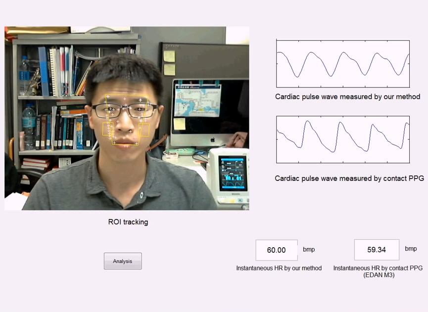
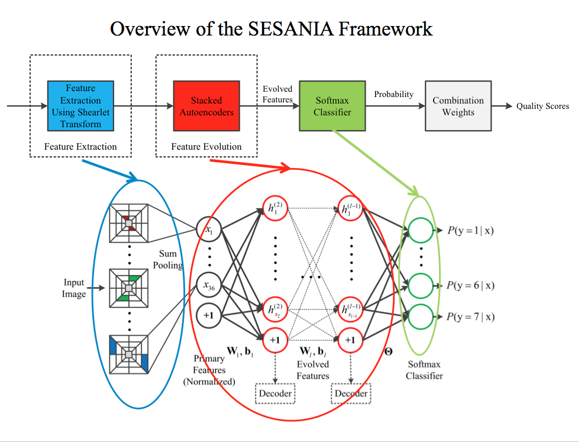
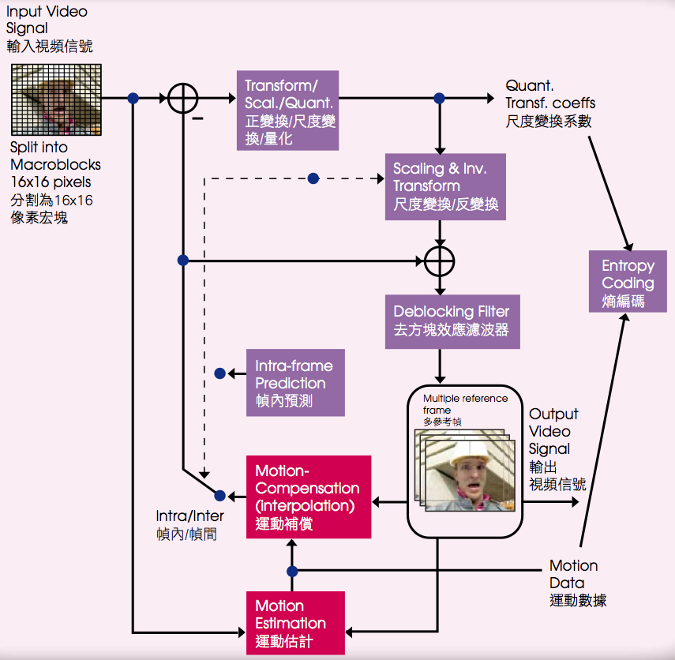
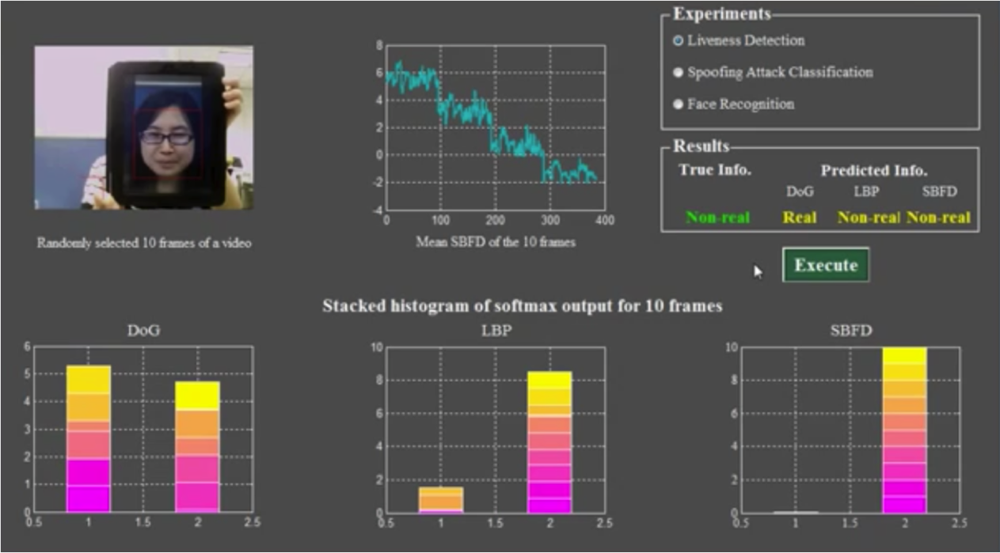

Department of Electronic Engineering
City University of Hong Kong
Office: Room G6506, Academic Building 1 (AC1 Lift 7)
Phone: +852 3442 7779
Fax: +852 3442 7791
Email: eelmpo@cityu.edu.hk
Dr. Lai-Man Po received his BSc degree with First Class Honors and his PhD degree from City University of Hong Kong in 1988 and 1991, respectively. In 1988, he won the First Prize in the Paper Contest for Students and Non-corporate Members organized by the Institute of Electronics and Radio Engineers of Hong Kong. In the same year, he also obtained a 3-year Postgraduate Fellowship from the Sir Edward Youde Memorial Council for his postgraduate studies in City University of Hong Kong. After he obtained the Ph.D. degree, he joined the Department of Electronic Engineering, City University of Hong Kong. Currently, Dr. Po is Associate Professor in the Electrical Engineering Department. He has published over 170 technical journal and conference papers with more than 6,000 citations. Dr. Po is listed as top 2% of the world’s most highly cited scientists by Stanford University.
Dr. Po was the chairman of the IEEE Hong Kong Chapter of Signal Processing Chapter in 2011 and 2012. He is a member of the Technical Committee on Multimedia Systems and Applications, IEEE Circuits and Systems Society and an Associate Editor of the HKIE Transactions. He also served on the organizing committees of the IEEE International Conference on Acoustics, Speech and Signal Processing in 2003, the IEEE International Conference on Image Processing in 2010, and other conferences.
My recent research interests mainly focus on:
PhD positions are available for self-motivated applicants at all levels with strong interest in conducting original research. Prior experiences in signal processing or image/video processing would be preferred. Applications are considered throughout the year until vacancies are filled. Applicants are encouraged to send a full CV through email to eelmpo@cityu.edu.hk

Remote PPG Signal Estimation from Human Face
Youtube Demo Video
No-Reference Image Quality Assessment with Shearlet Transform and Neural Networks

Motion Compensation Prediction Algorithms for H.264/AVC

Face Liveness Detection Using Shearlet Based Feature Descriptors
Youtube Demo Video{kind=link}
{kind=link}
{kind=link}
{kind=link}